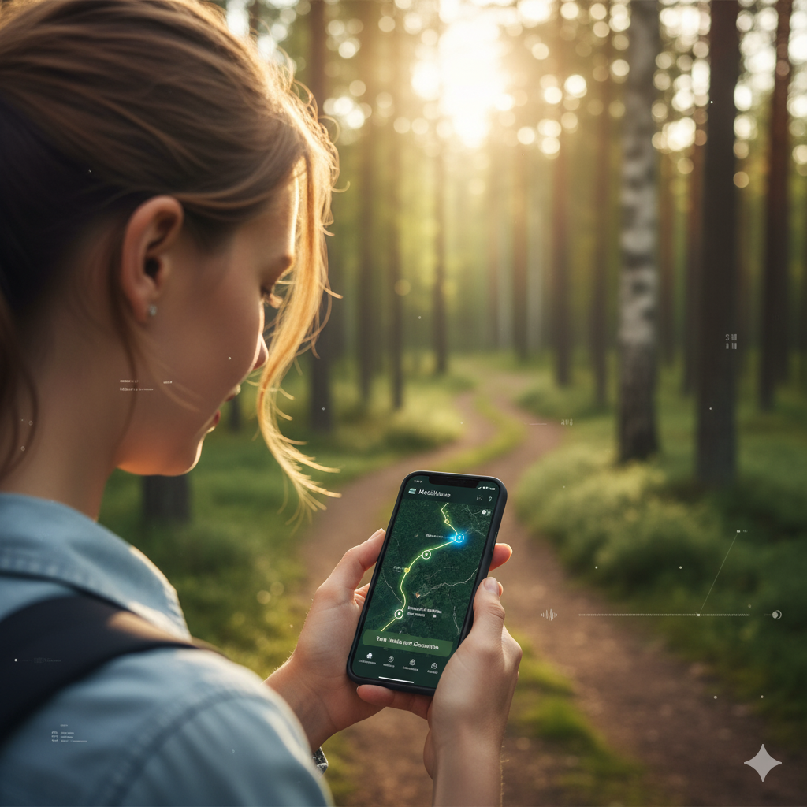

Offline Maps & GPS Trails
Explore confidently with downloadable, privacy-first maps. GPS reveals nearby points without needing mobile data or QR codes.
- Interactive map with trail prompts
- Works fully offline
- No live location sharing required